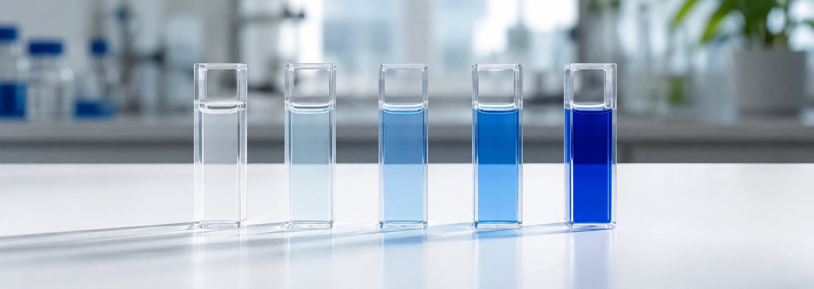
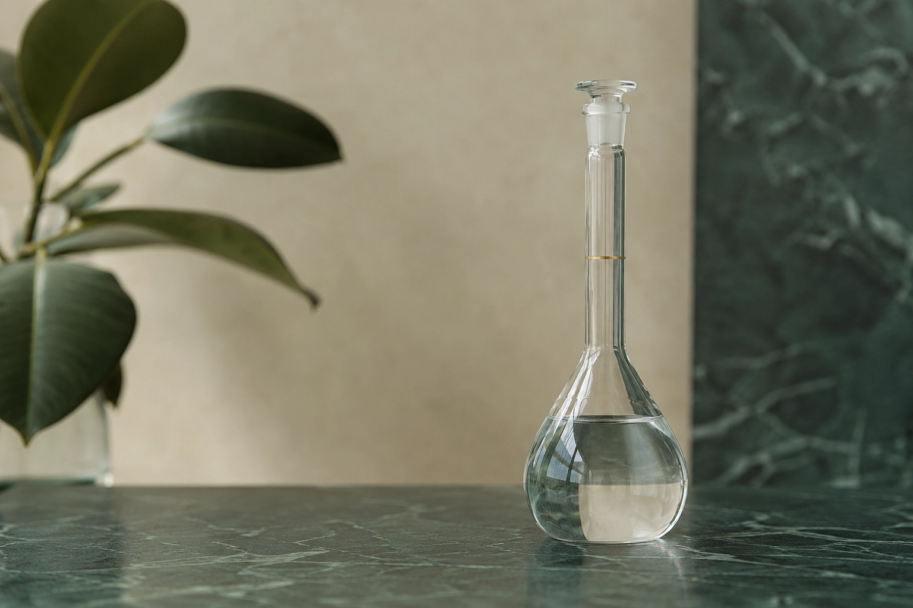

Calculadoras y recursos
para el trabajo en química
Herramientas de cálculo gratuitas para laboratorio, más artículos sobre química analítica e industrial. Para técnicos, estudiantes y profesionales.
Herramientas
Del blog
Ver todos →¿Qué es el límite de detección y cómo se calcula?
Guía práctica sobre LOD y LOQ en química analítica. Aprendé qué significan, cómo diferenciarlos y cuáles son los 3 métodos estadísticos más utilizados para calcularlos con precisión en tu laboratorio.

Cómo construir una curva de calibración paso a paso
Dominá la preparación y el análisis de tus curvas de calibración. Una guía paso a paso para ingresar datos correctamente, evaluar el coeficiente de correlación (R2), interpolar muestras y asegurar la trazabilidad de tus resultados.

¿Qué es la molaridad y cómo se calcula?
Guía completa sobre la concentración molar: definición, fórmula, ejemplos resueltos y errores comunes en la preparación de soluciones.
Preguntas frecuentes
¿Qué es QuimCalc?
QuimCalc es un conjunto de calculadoras y conversores online gratuitos para química de laboratorio, más un blog de química analítica e industrial. Reúne 21 herramientas (molaridad, diluciones, pH, dureza del agua, LOD/LOQ y más) pensadas para resolver los cálculos de rutina sin instalar nada.
¿Las herramientas de QuimCalc son gratis?
Sí. Todas las calculadoras y tablas de referencia son gratuitas, sin registro ni límite de uso. Podés usarlas directamente desde el navegador, también en el celular.
¿Necesito instalar o registrarme para usarlas?
No. Funcionan en el navegador sin registro ni instalación. QuimCalc además es una PWA: podés agregarla a la pantalla de inicio y usar las herramientas principales incluso sin conexión.
¿Para quién están pensadas estas calculadoras?
Para técnicos de laboratorio, estudiantes de química y profesionales del área analítica e industrial. Cada herramienta resuelve un cálculo concreto del trabajo diario y los artículos del blog explican los conceptos detrás de cada una.
¿Puedo confiar en los resultados para mi trabajo de laboratorio?
Las fórmulas siguen normas y referencias reconocidas (ISO, ICH, CRC Handbook, Skoog). Aun así, QuimCalc es una herramienta de apoyo: para resultados que se informan formalmente, validá siempre según el procedimiento documentado de tu laboratorio.